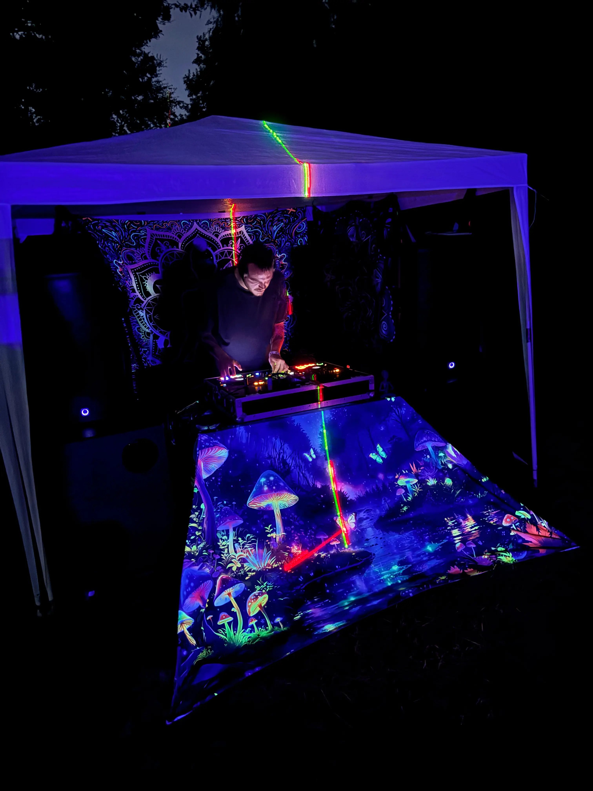
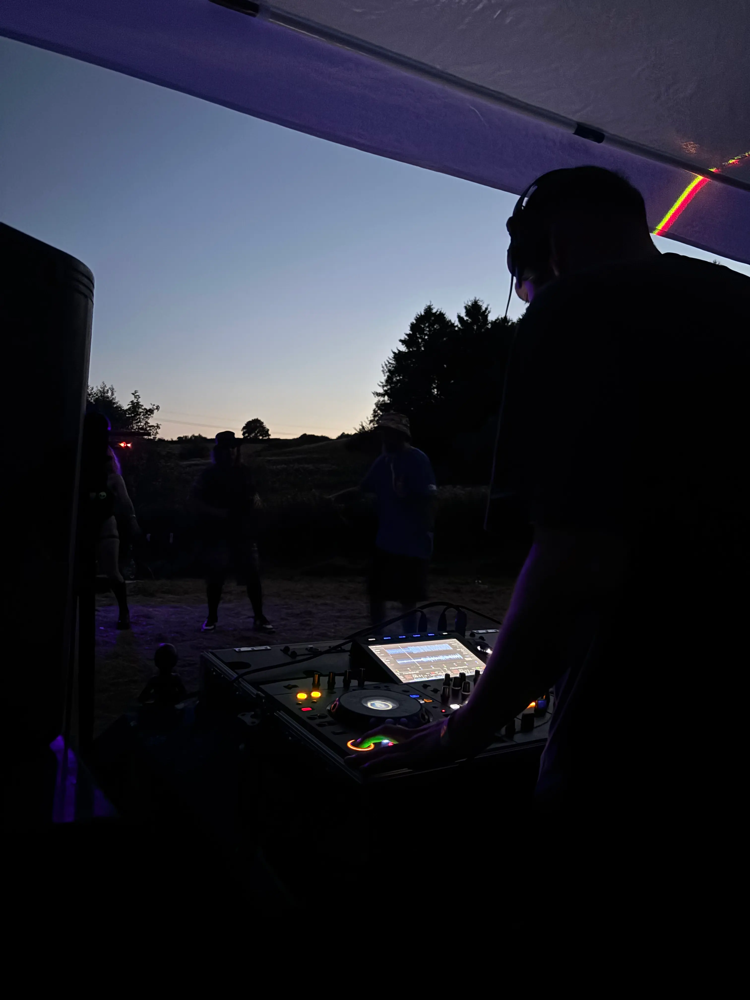
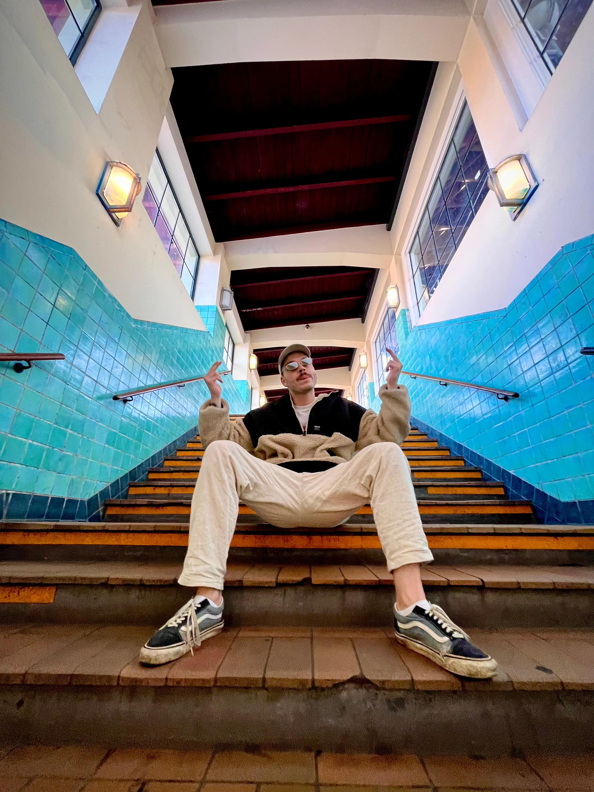

About Me
Hello! I’m Andy, also known as NYT NAVN, a musician creating euphonic, immersive tracks for those who love to explore sound. My music is inspired by experimental synths, textures, and rhythmic exploration.
Press / Photos



Fun Facts
- Favorite instruments: Synths, Samplers
- Current project: Exploring trip hop and ambient music
- Music influences: Electronic, Industrial, Psychedelic and Ambient
- Production gear: Macbook Pro M2 (2023), Ableton Live 12 Suite, Ableton Move, Beyerdynamic DT770 Pro, Yamaha HS7, Røde NT1-A
- DJ gear: Denon SC Live 4 (for practice), Sennheiser HD25, Sandisk Extreme Pro 256GB (2 pieces), Rekordbox